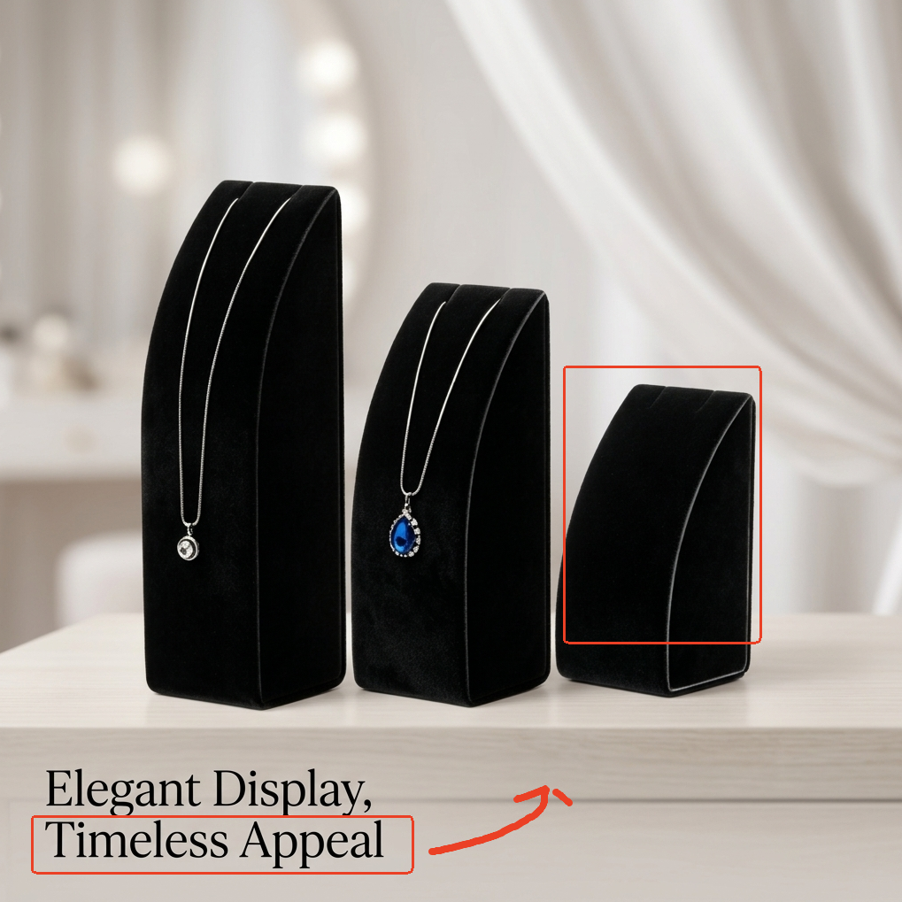
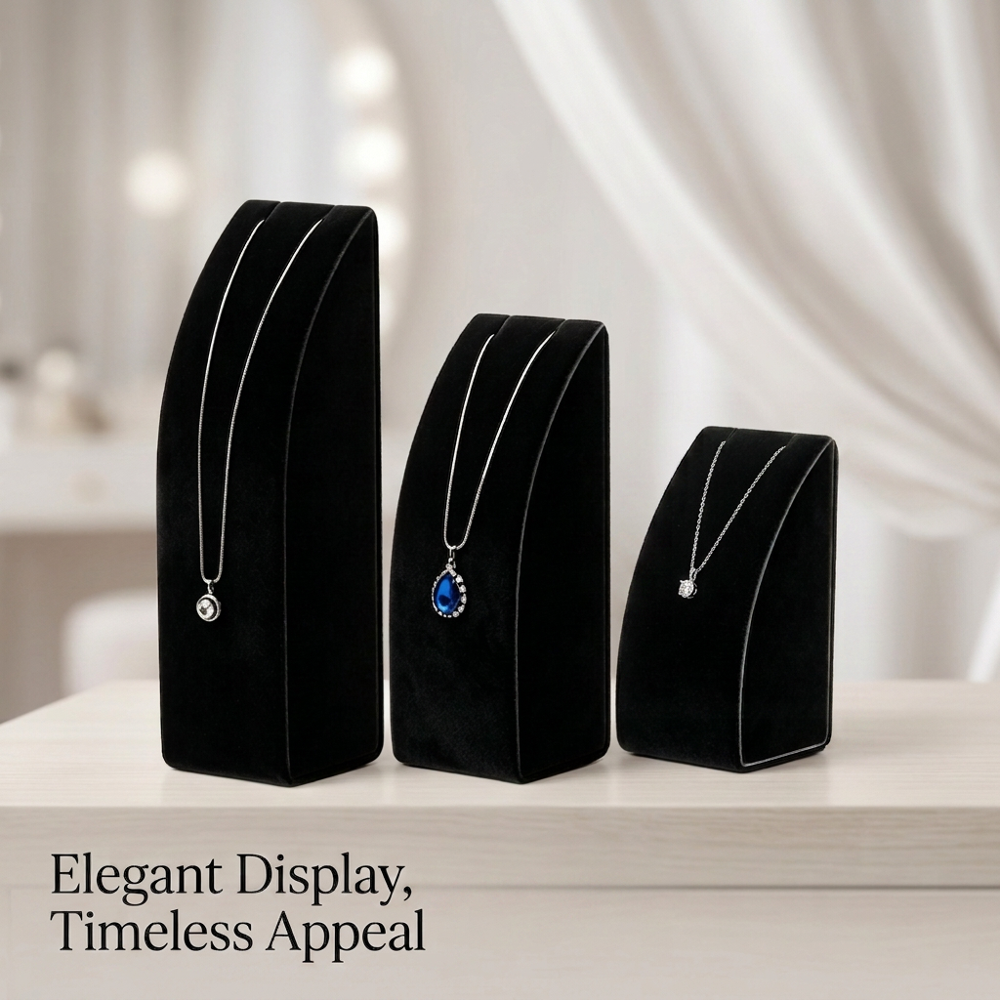

01 · Annotation guided edit
ANNO-001
将文本内容调整至指定位置；添加项链


Annotation / marked imageGenerated查看输入图 / 生成图
最终 Prompt
{
"status": "proceed",
"edit_target": "Image A",
"image_roles": {
"Image A": "annotated_edit_target"
},
"remove": {
"target": "all visible red annotation marks, including the two red rectangles and the red curved arrow",
"target_area": "the boxed text area at the lower left, the boxed right-side necklace display stand, and the arrow path between them",
"integration": "remove the annotation overlays cleanly and restore the underlying image naturally with matching background tone, fabric texture, shelf surface, and edge detail"
},
"move": {
"target": "the visible bottom text content currently placed at the lower left of the image",
"target_area": "the location indicated by the red arrow",
"content": "relocate the existing text to the arrow-designated position while keeping the same wording and elegant editorial layout style",
"integration": "preserve consistent typography appearance, scale balance, spacing, perspective, and natural placement within the composition; the moved text should look intentionally designed into the original scene"
},
"text_edit": {
"target": "the visible lower-left caption text",
"content": "keep the same text content and styling, but place it at the annotation-specified destination instead of its current position",
"integration": "maintain the refined serif typography, clean black text color, and premium product-poster aesthetic"
},
"insert": {
"target": "the rightmost black velvet necklace display stand marked by the red rectangle",
"content": "add a necklace displayed on that stand, naturally draped and centered on the stand surface, matching the premium jewelry product scene",
"integration": "anchor the necklace to the display stand itself, with realistic hanging behavior, correct scale, matching studio lighting, consistent shadows, correct perspective, and material detail coherent with the existing jewelry displays"
},
"repair": {
"target": "areas revealed after moving the text and removing the annotations",
"content": "reconstruct the original clean poster background and shelf area where the text and red marks were previously visible",
"integration": "match surrounding lighting, shadows, soft background blur, tabletop texture, and composition continuity without visible retouch traces"
},
"preserve": [
"the overall product photography composition",
"the three black velvet necklace display stands and their existing structure, shape, material, and color",
"the two existing necklaces on the left and center stands",
"the soft draped background, lighting direction, shadows, depth of field, and tabletop appearance",
"all non-target areas not explicitly edited"
],
"do_not_change": [
"do not alter the camera angle or scene perspective",
"do not change the material or color of the display stands",
"do not move or redesign the left and center necklaces",
"do not place the new necklace beside the stand or in the background; it must be on the rightmost stand",
"do not leave any red annotation marks in the final image"
]
}